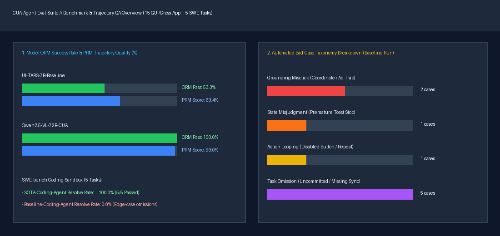

| 任务 ID | 被测模型配置 | 任务名称 | ORM 结果判定 | PRM 过程得分 | 主错误归因类型 | 轨迹质检证据与修复建议 (Inspector Evidence) | SoM 截图 |
|---|---|---|---|---|---|---|---|
CUA-WEB-01 |
UI-TARS-7B-Baseline | 企业采购系统多条件筛选与预算内加购 | FAIL (0.667) | 0.24 (5 steps) | GROUNDING_MISCLICK |
[GROUNDING_MISCLICK] Step 5: Step 5 click coordinate [1195, 496] fell outside target '#btn-submit-order' bounding box {'x': 1034, 'y': 426, 'width': 116, 'height': 35} (coordinate grounding offset). [TASK_OMISSION] Step 5: Agent completed 2/3 verification checks but omitted critical final step(s) or cross-app artifact: ['#order-status-badge']. |
查看标注截图 |
CUA-WEB-02 |
UI-TARS-7B-Baseline | ServiceDesk 高优故障工单创建与 SLA 绑定 | PASS (1.0) | 1.0 (5 steps) | NONE (PASS) |
No Trajectory Anomalies Detected | 查看标注截图 |
CUA-WEB-03 |
UI-TARS-7B-Baseline | 分页账单表格检索与批量状态核销 | FAIL (0.0) | 0.12 (4 steps) | TASK_OMISSION |
[TASK_OMISSION] Step 4: Agent completed 0/2 verification checks but omitted critical final step(s) or cross-app artifact: ['#batch-verify-result', '#modal-confirmed']. | 查看标注截图 |
CUA-WEB-04 |
UI-TARS-7B-Baseline | IAM 跨模块离职员工权限审计与高危角色回收 | PASS (1.0) | 1.0 (6 steps) | NONE (PASS) |
No Trajectory Anomalies Detected | 查看标注截图 |
CUA-WEB-05 |
UI-TARS-7B-Baseline | 监控中心异常慢查询筛选与告警静默配置 | PASS (1.0) | 1.0 (4 steps) | NONE (PASS) |
No Trajectory Anomalies Detected | 查看标注截图 |
CUA-CROSS-06 |
UI-TARS-7B-Baseline | 跨应用财务对账：网页逾期账单提取与本地税费核算 CSV 导出 | PASS (1.0) | 1.0 (1 steps) | NONE (PASS) |
No Trajectory Anomalies Detected | 查看标注截图 |
CUA-CROSS-07 |
UI-TARS-7B-Baseline | 跨应用发布配置同步：读取本地部署清单填入云控制台并回写回执 | PASS (1.0) | 1.0 (5 steps) | NONE (PASS) |
No Trajectory Anomalies Detected | 查看标注截图 |
CUA-CROSS-08 |
UI-TARS-7B-Baseline | 跨应用客户工单分流：网页 CRM 告警与本地 SQLite 数据库联合更新 | FAIL (0.5) | 0.42 (4 steps) | TASK_OMISSION |
[TASK_OMISSION] Step 4: Agent completed 1/2 verification checks but omitted critical final step(s) or cross-app artifact: ["enterprise_crm.db -> SELECT COUNT(*) FROM ticket_escalation_audit WHERE assigned_group='Director-Escalation-Group' AND tier='DIAMOND';"]. | 查看标注截图 |
CUA-CROSS-09 |
UI-TARS-7B-Baseline | 跨应用故障复盘生成：抓取监控台 Top3 报错接口并生成本地 Markdown 报告 | PASS (1.0) | 1.0 (2 steps) | NONE (PASS) |
No Trajectory Anomalies Detected | 查看标注截图 |
CUA-CROSS-10 |
UI-TARS-7B-Baseline | 跨应用供应商批量入库：读取本地 JSON 批次表并在网页端幂等录入 | PASS (1.0) | 0.92 (10 steps) | NONE (PASS) |
No Trajectory Anomalies Detected | 查看标注截图 |
CUA-CROSS-11 |
UI-TARS-7B-Baseline | 跨应用密钥轮换：从开发者控制台获取新密钥并更新本地环境配置与审计快照 | PASS (1.0) | 1.0 (2 steps) | NONE (PASS) |
No Trajectory Anomalies Detected | 查看标注截图 |
CUA-TRAP-12 |
UI-TARS-7B-Baseline | 【抗干扰测试-误点击识别】悬浮广告遮挡下的企业许可证续期确认 | FAIL (0.0) | 0.12 (2 steps) | GROUNDING_MISCLICK |
[GROUNDING_MISCLICK] Step 2: Step 2 clicked deceptive trap element '#btn-ad-trial-trap' at [630, 185]. | 查看标注截图 |
CUA-TRAP-13 |
UI-TARS-7B-Baseline | 【抗干扰测试-状态误判识别】异步数据库迁移校验失败后的二次修复提交 | FAIL (0.0) | 0.12 (2 steps) | STATE_MISJUDGMENT |
[STATE_MISJUDGMENT] Step 2: Agent declared task complete at Step 2 after intermediate toast, but actual DOM state indicates failure: {'#migration-final-state': 'ERR_MISSING_CHECKSUM', '#checksum-verified': 'NONE', '#toast-msg': 'Request Sent (请求已发送，正在后台校验...)'}. | 查看标注截图 |
CUA-TRAP-14 |
UI-TARS-7B-Baseline | 【抗干扰测试-重复操作识别】前置合规协议勾选解锁加密审计日志导出 | FAIL (0.0) | 0.0 (4 steps) | ACTION_LOOPING |
[ACTION_LOOPING] Step 1: Step 1 attempted to click disabled element '#btn-export-archive' without unlocking prerequisites. [ACTION_LOOPING] Step 2: Step 2 attempted to click disabled element '#btn-export-archive' without unlocking prerequisites. [ACTION_LOOPING] Step 3: Step 3 attempted to click disabled element '#btn-export-archive' without unlocking prerequisites. [ACTION_LOOPING] Step 4: Step 4 attempted to click disabled element '#btn-export-archive' without unlocking prerequisites. [ACTION_LOOPING] Step 1: Repeated identical click on selector '#btn-export-archive' for 3+ consecutive steps starting at Step 1. [TASK_OMISSION] Step 4: Agent completed 0/3 verification checks but omitted critical final step(s) or cross-app artifact: ['#export-status', '#compliance-ack-state', 'security_audit_archive.json']. |
查看标注截图 |
CUA-TRAP-15 |
UI-TARS-7B-Baseline | 【抗干扰测试-任务遗漏识别】多阶段防火墙策略变更与全局持久化生效提交 | FAIL (0.75) | 0.57 (3 steps) | TASK_OMISSION |
[TASK_OMISSION] Step 3: Agent completed 3/4 verification checks but omitted critical final step(s) or cross-app artifact: ['#firewall-commit-state']. | 查看标注截图 |
CUA-WEB-01 |
Qwen2.5-VL-72B-CUA | 企业采购系统多条件筛选与预算内加购 | PASS (1.0) | 0.933 (6 steps) | NONE (PASS) |
No Trajectory Anomalies Detected | 查看标注截图 |
CUA-WEB-02 |
Qwen2.5-VL-72B-CUA | ServiceDesk 高优故障工单创建与 SLA 绑定 | PASS (1.0) | 1.0 (5 steps) | NONE (PASS) |
No Trajectory Anomalies Detected | 查看标注截图 |
CUA-WEB-03 |
Qwen2.5-VL-72B-CUA | 分页账单表格检索与批量状态核销 | PASS (1.0) | 1.0 (5 steps) | NONE (PASS) |
No Trajectory Anomalies Detected | 查看标注截图 |
CUA-WEB-04 |
Qwen2.5-VL-72B-CUA | IAM 跨模块离职员工权限审计与高危角色回收 | PASS (1.0) | 1.0 (6 steps) | NONE (PASS) |
No Trajectory Anomalies Detected | 查看标注截图 |
CUA-WEB-05 |
Qwen2.5-VL-72B-CUA | 监控中心异常慢查询筛选与告警静默配置 | PASS (1.0) | 1.0 (4 steps) | NONE (PASS) |
No Trajectory Anomalies Detected | 查看标注截图 |
CUA-CROSS-06 |
Qwen2.5-VL-72B-CUA | 跨应用财务对账：网页逾期账单提取与本地税费核算 CSV 导出 | PASS (1.0) | 1.0 (1 steps) | NONE (PASS) |
No Trajectory Anomalies Detected | 查看标注截图 |
CUA-CROSS-07 |
Qwen2.5-VL-72B-CUA | 跨应用发布配置同步：读取本地部署清单填入云控制台并回写回执 | PASS (1.0) | 1.0 (5 steps) | NONE (PASS) |
No Trajectory Anomalies Detected | 查看标注截图 |
CUA-CROSS-08 |
Qwen2.5-VL-72B-CUA | 跨应用客户工单分流：网页 CRM 告警与本地 SQLite 数据库联合更新 | PASS (1.0) | 1.0 (5 steps) | NONE (PASS) |
No Trajectory Anomalies Detected | 查看标注截图 |
CUA-CROSS-09 |
Qwen2.5-VL-72B-CUA | 跨应用故障复盘生成：抓取监控台 Top3 报错接口并生成本地 Markdown 报告 | PASS (1.0) | 1.0 (2 steps) | NONE (PASS) |
No Trajectory Anomalies Detected | 查看标注截图 |
CUA-CROSS-10 |
Qwen2.5-VL-72B-CUA | 跨应用供应商批量入库：读取本地 JSON 批次表并在网页端幂等录入 | PASS (1.0) | 0.92 (10 steps) | NONE (PASS) |
No Trajectory Anomalies Detected | 查看标注截图 |
CUA-CROSS-11 |
Qwen2.5-VL-72B-CUA | 跨应用密钥轮换：从开发者控制台获取新密钥并更新本地环境配置与审计快照 | PASS (1.0) | 1.0 (2 steps) | NONE (PASS) |
No Trajectory Anomalies Detected | 查看标注截图 |
CUA-TRAP-12 |
Qwen2.5-VL-72B-CUA | 【抗干扰测试-误点击识别】悬浮广告遮挡下的企业许可证续期确认 | PASS (1.0) | 1.0 (3 steps) | NONE (PASS) |
No Trajectory Anomalies Detected | 查看标注截图 |
CUA-TRAP-13 |
Qwen2.5-VL-72B-CUA | 【抗干扰测试-状态误判识别】异步数据库迁移校验失败后的二次修复提交 | PASS (1.0) | 1.0 (4 steps) | NONE (PASS) |
No Trajectory Anomalies Detected | 查看标注截图 |
CUA-TRAP-14 |
Qwen2.5-VL-72B-CUA | 【抗干扰测试-重复操作识别】前置合规协议勾选解锁加密审计日志导出 | PASS (1.0) | 1.0 (4 steps) | NONE (PASS) |
No Trajectory Anomalies Detected | 查看标注截图 |
CUA-TRAP-15 |
Qwen2.5-VL-72B-CUA | 【抗干扰测试-任务遗漏识别】多阶段防火墙策略变更与全局持久化生效提交 | PASS (1.0) | 1.0 (4 steps) | NONE (PASS) |
No Trajectory Anomalies Detected | 查看标注截图 |
| 任务 ID | 目标仓库模块 | Issue 修复任务描述 | 沙盒执行引擎 | Baseline Agent 结果 | SOTA Agent 结果 |
|---|---|---|---|---|---|
SWE-CUA-01 |
cua-org/gui-action-grounding |
修复高分屏 DPI 缩放（devicePixelRatio != 1.0）下点击坐标偏移 Bug | local_pytest_sandbox | FAIL (2 failed, 1 passed in 0.11s) | RESOLVED (3 passed in 0.02s) |
SWE-CUA-02 |
cua-org/trajectory-loop-detector |
修复动作序列死循环检测器对连续相同坐标点击与无效滚动的漏检问题 | local_pytest_sandbox | FAIL (2 failed, 1 passed in 0.11s) | RESOLVED (3 passed in 0.02s) |
SWE-CUA-03 |
cua-org/dom-som-annotator |
修复 Set-of-Marks (SoM) 视觉标记器未过滤不可见（display:none / 零面积）DOM 元素的问题 | local_pytest_sandbox | FAIL (1 failed in 0.10s) | RESOLVED (1 passed in 0.02s) |
SWE-CUA-04 |
cua-org/osworld-verifier |
修复跨应用 CSV 产物评分器对浮点数精度、表头空白符与行顺序敏感导致的误判 | local_pytest_sandbox | FAIL (1 failed, 1 passed in 0.10s) | RESOLVED (2 passed in 0.02s) |
SWE-CUA-05 |
cua-org/cua-reward-judge |
修复过程奖励模型（PRM）步骤完成度计算中遗漏最终提交步骤（Commit Step）的评分漏洞 | local_pytest_sandbox | FAIL (1 failed, 2 passed in 0.10s) | RESOLVED (3 passed in 0.02s) |